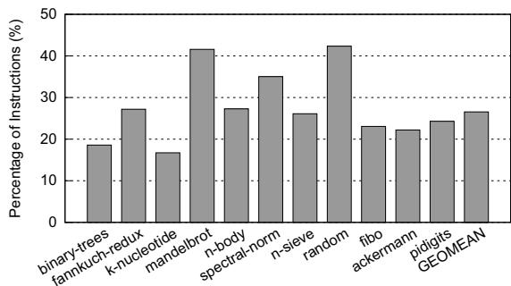

Short-Circuit Dispatch: Accelerating Virtual Machine Interpreters on Embedded Processors 通俗讲解¶
0. 整体创新点通俗解读¶
痛点直击 (The "Why")
这篇论文要解决的根本问题，是嵌入式处理器上运行脚本语言（如 Lua、JavaScript）时，解释器的字节码分发（dispatch）环节效率极低。传统优化思路主要聚焦于解决间接跳转（indirect jump）的分支预测错误问题，但这在嵌入式平台上效果不佳。
- 为什么分支预测优化在嵌入式平台“很难受”？ 因为嵌入式处理器通常具有浅流水线（shallow pipelines）和低 IPC（Instructions Per Cycle）。这意味着：
- 分支预测错误带来的惩罚（misprediction penalty）本身就不大（因为流水线级数少，冲刷代价低）。
- 处理器的基础 CPI（Cycles Per Instruction）本身就很高（由于顺序执行、小缓存等），所以即使完美预测了分支，节省的那点周期在整个高 CPI 背景下也显得微不足道。
- 被忽视的真正瓶颈是什么？ 论文指出，在嵌入式平台上，更严重的问题是分发循环中的冗余计算。每次处理一个字节码，解释器都要重复执行一整套操作：取指令（fetch）。这些操作构成了一个纯函数（pure function），即相同的字节码输入，必然产生相同的跳转目标地址输出。然而，这个“查表”过程每次都用软件重新算一遍，造成了巨大的动态指令数浪费（论文图3显示，这部分开销能占到总指令数的25%以上）。
通俗比方 (The Analogy)
想象你是一个图书管理员（解释器），每天的工作就是根据读者递过来的书名卡片（字节码），去一个巨大的书架（跳转表）上找到对应的书（执行函数）。
- 传统做法（Canonical Dispatch） 就像你每次拿到一张新卡片，都要先跑到目录室（decode），查一下这本书属于哪个分类（bound check），然后根据分类规则心算出它在书架上的具体位置（target address calculation），最后再跑去书架拿书（jump）。这个过程非常机械且重复。
- 现有优化（如更好的分支预测） 就像是给你配了一个记忆力超强的助手，他能猜到你下一步大概率要去哪个区域。但在一个很小的图书馆（嵌入式处理器）里，就算猜错了，你跑错地方再回来也没几步路，省不了多少时间。
- SCD 的做法（Short-Circuit Dispatch） 则完全不同。它相当于在你的工作台上直接放了一个便签贴（BTB）。第一次处理某本书的卡片时，你还是会走完整流程，但找到书后，你会立刻把“书名 -> 书架位置”的对应关系写在这个便签贴上。下次再有同样的卡片，你低头看一眼便签贴，就能直接拿到书，完全跳过了去目录室和心算的步骤。这个便签贴就是利用了处理器里本来就有的分支目标缓冲区（BTB），只是巧妙地改变了它的使用方式。
关键一招 (The "How")
作者并没有设计一个全新的硬件模块，而是对现有的 BTB (Branch Target Buffer) 进行了巧妙的复用和扩展，将其从一个单纯的“PC地址 -> 跳转目标”预测器，变成了一个“字节码 -> 跳转目标”的硬件缓存。
- 核心逻辑转换： 传统的 BTB 是用程序计数器（PC）作为索引（key）来查找跳转目标。而 SCD 的关键洞察是，在解释器的分发循环中，真正决定跳转目标的是字节码本身（opcode），而不是 PC。因此，SCD 在硬件层面做了一个扭转：当处理器取指单元发现当前正在取的是那个关键的分发跳转指令时，它就不再用 PC 去查 BTB，而是改用刚刚加载到专用寄存器（Rop）。
- 具体实现：
- 引入了几个新的专用寄存器（Rop, Rmask, Rbop-pc）和几条简单的ISA 扩展指令（如
bop,jru）。 Rbop-pc用来标记那个关键的分发跳转指令的位置。- 当取指单元取到
Rbop-pc指向的指令时，触发 SCD 机制，用Rop中的 opcode 作为 key 去查询 BTB。 - 如果 BTB 命中（hit），说明这是一个“热”字节码，处理器可以直接跳转到目标地址，完全绕过了软件层面的 decode、bound check 和地址计算代码，这就是“短路”（Short-Circuit）。
- 如果 BTB 未命中（miss），则走正常的慢路径，并在最后通过
jru指令将这次计算出的(opcode, target)对回填（update）到 BTB 中，供下次使用。
- 引入了几个新的专用寄存器（Rop, Rmask, Rbop-pc）和几条简单的ISA 扩展指令（如
- 精妙之处： BTB 的每个条目增加了一个 J/B̅ 标志位，用来区分这个条目是存储普通的分支预测信息（B），还是存储字节码的跳转表项（J）。这样，SCD 就能在几乎不增加硬件成本（论文称面积仅增加 0.72%）的前提下，将 BTB 一物两用，高效地缓存了软件跳转表中最常用的部分，从而大幅减少了冗余指令的执行。
 Figure 5: Pipeline structure augmented with SCD
Figure 5: Pipeline structure augmented with SCD
1. Short-Circuit Dispatch (SCD) 架构扩展 (ELI5)¶
痛点直击 (The "Why")
- 传统的虚拟机（VM）解释器，比如 Lua 或 JavaScript 的，其核心是一个“取指-解码-执行”的无限循环。这个循环里最耗时的部分叫 dispatch loop（分发循环）。
- 这个循环的瓶颈有两个：一是那个巨大的 indirect jump（间接跳转），因为目标地址太多，branch predictor（分支预测器）经常猜错，导致 pipeline flush（流水线冲刷）；二是每次循环都要重复做一堆 redundant computation（冗余计算），比如从字节码中 decode（解码）出操作码、做边界检查、再用操作码去查 jump table（跳转表）算出目标地址。
- 在桌面级 CPU 上，大家主要优化第一个问题——让预测器更聪明。但在 embedded processors（嵌入式处理器）上，这招效果很差。为什么？因为嵌入式 CPU 的 pipeline 很浅，预测错误的惩罚（penalty）本身就不大；但它的 IPC 很低，所以那堆冗余计算指令带来的开销就成了大头。之前的硬件或软件优化（如 jump threading）要么成本高，要么只减少了指令数但没消除计算本身。
通俗比方 (The Analogy)
- 想象你是个图书管理员，每天要根据读者给你的书名（字节码），去一个巨大的索引柜（jump table）里找到对应的书架号（handler 地址），然后跑过去拿书。
- 以前的做法是：无论这本书你今天已经找过多少次，每次都要重新走一遍“查索引柜 -> 算书架号 -> 跑过去”的完整流程。这很傻，对吧？
- SCD 的思路就是：你在自己口袋里（BTB）放一个小本子，记下最近常被问到的几本书名和它们的书架号。下次读者一报书名，你先摸摸口袋看有没有记。如果有，直接就跑过去了，省去了查大索引柜的麻烦。这个小本子就是对那个巨大索引柜的一个 cache（缓存）。
关键一招 (The "How")
- 作者没有去设计一个全新的、独立的硬件缓存，而是极其聪明地 复用 了 CPU 里本来就有的 **Branch Target Buffer **(BTB)。
- 具体来说，他们对 ISA 做了微小扩展，引入了几个新寄存器（Rop, Rmask, Rbop-pc）和几条新指令（bop, jru）。
- 最关键的逻辑转换在于 BTB 的索引方式：
- 正常情况下，BTB 是用 **PC **(程序计数器) 作为 key 来查找目标地址的。
- 在 SCD 中，当执行到那个特定的分发跳转指令时，硬件会 临时切换模式，改用刚刚加载到 Rop 寄存器里的 opcode（操作码）作为 key 去查询 BTB。
- 这样，BTB 就同时扮演了两个角色：
- 对于普通分支，它还是一个 PC-to-target 的预测器。
- 对于 VM 分发，它变成了一个 opcode-to-handler-address 的 memoization cache（记忆化缓存）。
- 整个过程形成了一个 fast path / slow path 的机制：
- Fast Path:
load.op->bop(BTB hit on opcode) -> 直接跳转。这 bypass 了所有冗余计算。 - Slow Path:
load.op->bop(BTB miss) -> 执行原有的解码、查表逻辑 ->jru(在跳转的同时，把新的 (opcode, target) 对写入 BTB)。
- Fast Path:
Figure 5: Pipeline structure augmented with SCD
- 这个设计的精妙之处在于 极低的硬件开销。它只是在现有 BTB 的 entry 里加了一个 J/B̄ bit 来区分存的是普通分支信息还是跳转表项（JTE），并增加了一些简单的控制逻辑。论文数据显示，芯片面积仅增加 0.72%，却能带来 19.9% 的平均性能提升和 24.2% 的 EDP（能耗延迟积）改善，性价比极高。
2. 基于操作码的BTB查找机制 (ELI5)¶
痛点直击
- 传统的虚拟机解释器（VM Interpreter）在执行字节码时，有一个经典的“分发循环”（dispatch loop）：取指令、解码、查跳转表、间接跳转。这个循环里的间接跳转是性能瓶颈。
- 在嵌入式处理器上，这个问题更“难受”。因为这类处理器流水线浅、IPC低，所以传统优化手段（如复杂的间接分支预测器）效果很差——就算你把预测准确率从50%提到99%，由于流水线短，误预测惩罚（misprediction penalty）本身就不大，省不了多少周期。
- 真正的大头开销其实是冗余计算：每次循环都要重复做解码、边界检查、地址计算这些事。这些操作本身不产生业务逻辑，纯粹是为了找到下一条要执行的字节码处理函数，却占了总指令数的25%以上（见图3）。
 Figure 3: Fraction of dispatch instructions for Lua
通俗比方
- 想象你是一个图书管理员（解释器），每天的工作就是根据读者递过来的书名（字节码），去一个巨大的索引柜（跳转表）里找到对应的书架号（目标地址），然后告诉读者去哪拿书。
- 传统做法是：每次读者给一个书名，你都得重新翻一遍整个索引柜（解码、查表、计算地址）。这很累，尤其当热门书被反复借阅时。
- SCD的做法就像是你在手边放了一个小速查便签本（BTB的一部分）。当你第一次处理某本书时，你还是会去大索引柜找，但找到后，你会立刻把“书名 -> 书架号”这条记录抄到你的便签本上。
- 下次再有读者要这本书，你看都不用看大柜子，直接瞄一眼便签本，如果找到了（命中），就立刻告诉他书架号。这个便签本就是用书名（操作码） 而不是你当前站的位置（PC） 来组织的。
关键一招
- 作者并没有去设计一个全新的、复杂的预测器，而是巧妙地复用并改造了处理器里已有的BTB（Branch Target Buffer）。
- 具体来说，他们在ISA层面引入了几个新寄存器（
Rop,Rmask,Rbop-pc）和新指令（bop,jru）。 - 核心的逻辑转换发生在取指阶段：
- 当处理器取到那个特定的分发跳转指令（其地址存于
Rbop-pc）时，它不再用当前的PC作为BTB的查询键。 - 而是改用刚刚加载并解码好的字节码操作码（存于
Rop.d）作为键去查询BTB。
- 当处理器取到那个特定的分发跳转指令（其地址存于
- 这个小小的“键”的替换，就完成了从“预测跳转目标”到“缓存并直接查找跳转目标”的根本性转变。
- 如果BTB里有这条“操作码->地址”的记录（JTE, Jump Table Entry），就直接跳过去，完全绕过了后续所有冗余的解码和查表指令；如果没有，就走原来的慢路径，并在最后用
jru指令把这次查到的新映射关系存入BTB，供下次使用。
Figure 5: Pipeline structure augmented with SCD
3. 新的ISA指令与寄存器 (ELI5)¶
痛点直击
- 传统的字节码解释器在每次执行指令时，都要走一遍完整的 dispatch loop：取指令、解码、查跳转表、间接跳转。这个过程会产生大量冗余计算，尤其是在嵌入式处理器上。
- 嵌入式处理器的浅流水线和低IPC特性，使得针对分支预测错误的优化（如更复杂的BTB）收效甚微，因为预测错误的惩罚本身就不高。
- 真正的瓶颈在于，即使分支预测100%准确，解释器仍然要执行解码、边界检查、地址计算这一整套固定开销。这些操作对于同一个opcode来说是完全纯函数（pure function），输入相同，输出必然相同，却要反复计算。
通俗比方
- 想象你是一个图书管理员（解释器），每天要根据读者（程序）给你的书名（字节码）去巨大的书库（跳转表）里找书（执行函数）。
- 传统做法是：每次拿到一个书名，你都要先翻阅厚厚的图书分类目录（解码），确认书名格式合法（边界检查），然后根据目录页码走到对应的书架区（地址计算），最后把书拿出来（间接跳转）。
- SCD的做法就像是给你配了一个智能手环（新ISA）。这个手环能自动识别你刚拿到的书名（
<inst>.op），并立刻在你手腕上显示这本书最常放的精确位置（bop查BTB）。如果手环有记录（BTB hit），你直接走过去拿就行，省去了翻目录、算位置的所有步骤。只有手环没记录时（BTB miss），你才走一遍老流程，并且在找到书后，顺手把手环里的位置信息更新一下（jru）。
关键一招
- 作者没有去修改解释器本身的复杂逻辑，也没有设计一个全新的、昂贵的硬件缓存，而是极其聪明地复用了CPU里已有的**Branch Target Buffer **(BTB)。
- 为了实现这个复用，他们引入了最小化的硬件改动：
- 三个新寄存器：
- Rop (Opcode Register)：一个专用的“托盘”，用来存放当前正在处理的、已经解码好的opcode。它是硬件查找BTB的key。
- **Rmask **(Mask Register)：一个一次性设置的“滤网”，用于从原始字节码中自动提取出opcode字段，省去了一条软件mask指令。
- **Rbop-pc **(BOP-PC Register)：一个“路标”，存储着解释器中那个关键的间接跳转指令的PC地址。当CPU取指单元发现当前PC和这个路标匹配时，就知道该触发SCD逻辑了。
- 五条新指令：
<inst>.op：这是一个后缀，加在普通的load指令后面。它告诉硬件：“除了把数据加载到通用寄存器，还要用Rmask过滤一下，结果放到Rop里”。这一步就把软件解码变成了硬件自动填充。bop(branch-on-opcode)：这是SCD的核心。当取指单元发现当前PC等于Rbop-pc时，它会用Rop里的值（而不是PC）去查询BTB。如果命中，就直接跳转，彻底绕过了后续所有的软件dispatch代码。jru(jump-register-with-jte-update)：这是慢路径的终点。它完成正常的跳转，但同时会将（Rop, 目标地址）这对映射关系写入BTB，为下一次快速路径做准备。setmask和jte flush：分别是初始化（设置Rmask）和清理（上下文切换时清空BTB中的JTE条目）的辅助指令，保证了功能的正确性和安全性。
- 三个新寄存器：
 Figure 4: Transformed dispatch loop (original code taken from Figure 1(b))
这张图清晰地展示了改造前后的对比。灰色部分就是被SCD短路掉的冗余指令。通过
Figure 4: Transformed dispatch loop (original code taken from Figure 1(b))
这张图清晰地展示了改造前后的对比。灰色部分就是被SCD短路掉的冗余指令。通过ldl.op自动填充Rop，bop直接查表跳转，整个dispatch loop的开销被压缩到了极致。
4. 跳转表条目（JTE）与BTB条目的共存管理 (ELI5)¶
痛点直击 (The "Why")
- 传统的 BTB (Branch Target Buffer) 只干一件事：记住“在某个 PC 地址，上次跳去了哪里”，用来预测直接跳转。但解释器的分发循环里，那个关键的间接跳转（
jmp *table[opcode]）有成百上千个可能的目标，传统 BTB 对它基本无效。 - 之前很多硬件优化方案（比如 VBBI）试图让 BTB 能预测这种多目标的间接跳转，但它们只是“猜得更准了”，冗余计算依然存在。每次分发，CPU 还是要完整走一遍“取指令 -> 解码 opcode -> 查表 -> 跳转”这个流程，白白浪费了很多指令和周期。
- 现在，这篇论文想彻底绕过这个冗余流程。但如果要缓存
opcode -> handler address这种映射关系，就需要一个新的硬件表。单独建一个表？那成本太高了，违背了“低开销”的设计初衷。
通俗比方 (The Analogy)
- 想象你的书桌抽屉（BTB）本来只放“常用文件夹”（普通分支目标）。现在你开始做一项新工作——处理各种颜色的乐高积木（bytecode），每种颜色对应一个特定的组装说明书（handler）。
- 以前，你每次拿到一块新积木，都要翻厚厚的总目录（jump table）去找对应的说明书在哪一页，很麻烦。
- 现在，你灵机一动，干脆把最常用的那几种颜色积木和它们对应的说明书页码，也塞进你的书桌抽屉里！为了不跟原来的文件夹搞混，你在每个新卡片上贴了个小标签（J/B̄ bit），写着“这是乐高指南”。
- 这样，当你再拿到一块积木时，第一反应就是拉开抽屉，看有没有贴着“乐高指南”标签的卡片匹配这块积木的颜色。如果有，直接按上面的页码拿说明书；如果没有，再去翻那本厚重的总目录。
关键一招 (The "How")
- 作者没有新建一张表，而是巧妙地复用并改造了现有的 BTB。他们对 BTB 的每个条目做了两件事：
- 增加一个标志位（J/B̄ bit）：这个单比特开关告诉硬件，当前这个 BTB 条目里存的是传统的“PC->目标地址”映射（B̄=0），还是新的“opcode->目标地址”映射（J=1）。
- 改变索引方式：当 CPU 取到那个特殊的分发跳转指令（由 Rbop-pc 寄存器标记）时，硬件不再用 PC 地址去查 BTB，而是直接用刚解码出来的 opcode（存于 Rop.d）作为 key 去查找。查找时，硬件会自动过滤掉所有 J/B̄=0 的普通条目，只看 J=1 的 **JTE **(Jump Table Entry)。
- 为了解决新旧条目争抢空间的问题，他们设定了一个聪明的替换策略：
- JTE 享有最高优先级。当 BTB 满了需要腾地方时，新来的 JTE 可以毫不犹豫地踢掉一个普通的 BTB 条目。
- 但反过来不行，普通的分支预测条目不能踢掉一个 JTE。
- 这背后的逻辑是：对于运行解释器的嵌入式场景，加速分发循环带来的收益，远大于偶尔miss一个普通分支预测的损失。而且，实际程序中真正频繁使用的 opcode 种类很少（通常只有几十个），根本占不满 BTB。
- Figure 5: Pipeline structure augmented with SCD
- 这个设计的精妙之处在于，它用极小的硬件改动（一个标志位、一点控制逻辑），就将 BTB 从一个单纯的“分支预测器”变成了一个通用的“小型硬件缓存”，专门用来短路（short-circuit）掉解释器中最耗时的冗余计算路径。
5. 流水线停顿逻辑 (ELI5)¶
痛点直击 (The "Why")
- 在嵌入式处理器上，解释器的分发循环（dispatch loop）是性能瓶颈。传统做法是每次都要走一遍完整的“取指令 -> 解码 -> 查跳转表 -> 间接跳转”流程。
- 这个流程里，解码、边界检查、目标地址计算这些步骤对于同一个字节码（bytecode）来说是完全冗余的，因为它们是一个纯函数（pure function），输入相同，输出必然相同。
- 如果能在硬件层面直接“记住”某个字节码对应的目标地址，就能绕过这些冗余计算，直接跳过去执行，从而大幅减少动态指令数和缓存访问。
- 但是，这个“记住”的过程需要时间：当一个新字节码被加载后，它的操作码（opcode）需要先被提取并存入 Rop 寄存器，然后才能用它去查询 BTB（Branch Target Buffer）。如果在 Rop 还没准备好时，负责查询的 bop 指令就进入了流水线，就会出问题。
通俗比方 (The Analogy)
- 想象一个快递分拣中心（解释器）。每个包裹（字节码）上都有一个目的地代码（opcode）。
- 老办法是，每个包裹来了，工人都要拆开看地址（解码），查厚厚的分拣手册（跳转表），然后告诉传送带往哪条道走（间接跳转）。这很慢。
- SCD 的新办法是，在传送带入口装一个智能扫描仪（BTB）。如果这个目的地代码以前见过，扫描仪会直接亮绿灯，并把包裹瞬间弹射到正确的滑道（快速路径）。
- 但这里有个关键前提：包裹必须先经过一个贴标机，把目的地代码清晰地打印在一个显眼的标签（Rop 寄存器）上，扫描仪才能读。
- “流水线停顿逻辑”就像是在贴标机和扫描仪之间加了一个感应门。如果包裹还没贴好标签（Rop 未就绪），感应门就会暂时挡住后面的包裹（停顿流水线），不让它进入扫描仪区域，避免因为读不到标签而走错路或卡住。虽然等一下会损失一点时间（插入气泡），但比起走错路后整个分拣流程崩溃或者退回重来，这点等待是完全值得的。
关键一招 (The "How")
- 作者没有选择让 bop 指令在 Rop 未就绪时“将就一下”，直接走慢速路径（fall through to the slow path）。这种做法虽然不会出错，但会白白浪费掉一次走快速路径的机会，尤其是在嵌入式处理器这种对指令数极其敏感的场景下。
- 相反，作者在流水线的 Fetch 阶段增加了一个简单的侦测逻辑（stall logic）。
- 这个逻辑会做两件事：
- 检查当前正在 Fetch 的指令是不是 bop 指令。
- 同时检查是否有任何正在执行的指令（in-flight instruction）会更新 Rop 寄存器。
- 如果两个条件同时满足（即 bop 来了，但 Rop 还在路上），流水线就会主动停顿（stall），让 bop 在 Fetch 阶段多等几个周期。
- 一旦 Rop 的值被成功写入，停顿解除，bop 就能立刻用这个新鲜出炉的操作码去 BTB 里查询，从而确保能抓住这次走快速路径的机会。
- 这个设计的核心思想是：在资源受限的嵌入式环境中，牺牲少量的流水线气泡（bubble），来换取确定性的、高价值的快速路径命中，最终实现净收益。 Figure 5: Pipeline structure augmented with SCD